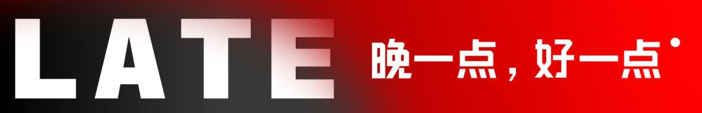
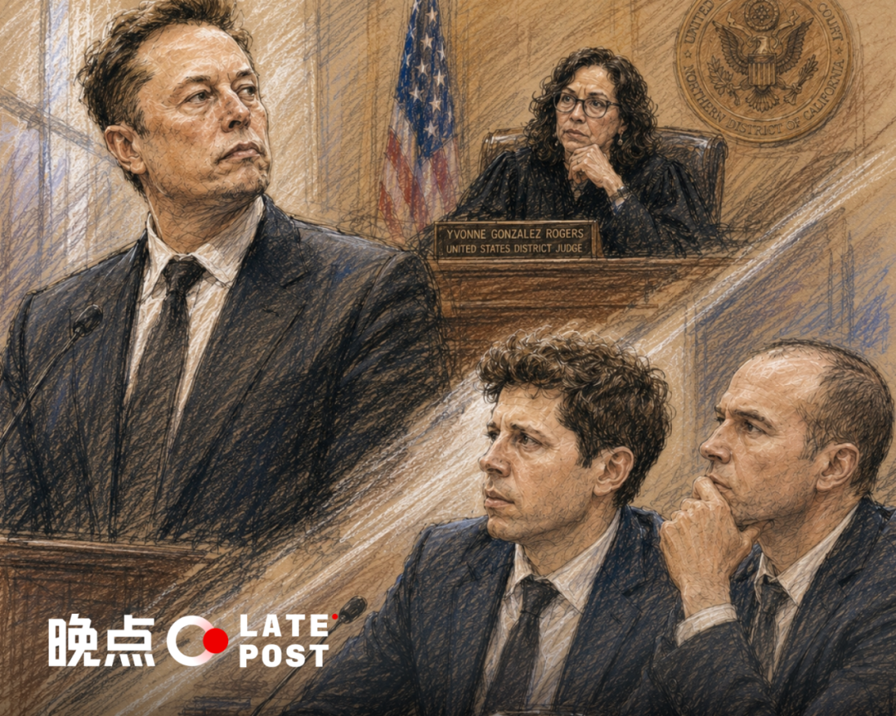
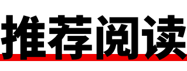
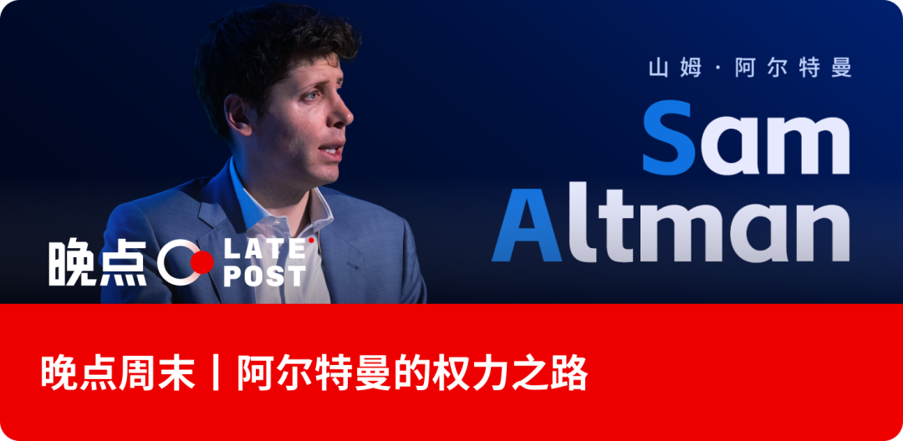
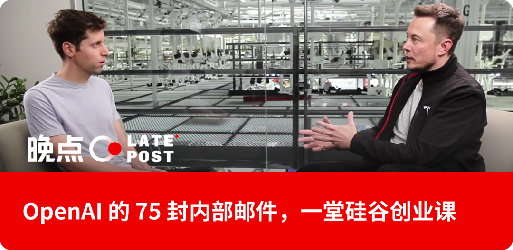
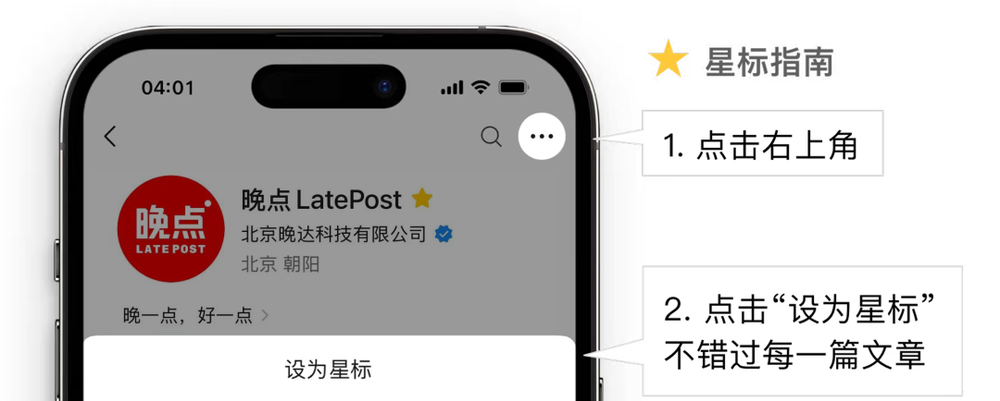
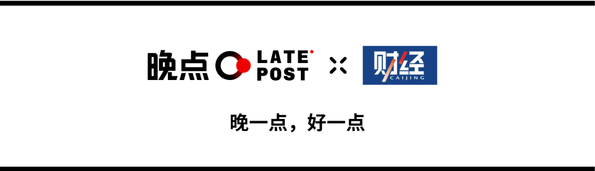

💡 现场直击硅谷世纪庭审：马斯克 vs 奥尔特曼——谁是 “最讨厌的人”
Inside Silicon Valley's trial of the century: Musk vs Altman, who is the most hated?


一场关于背叛betrayal[bɪˈtreɪəl] n. 背叛；出卖、贪婪与理想的审判。
举世瞩目worldwide[ˈwɜrldwaɪd] adj. 举世瞩目的的庭审进入第二周。
原告是世界首富wealthiest[ˈwelθiɪst] adj. 最富有的埃隆·马斯克，被告是他曾经的盟友、正在筹备上市的 OpenAI，及其 CEO 山姆·奥尔特曼（Sam Altman）和总裁格雷格·布罗克曼（Greg Brockman）。马斯克说，他们偷走了一家慈善charity[ˈtʃærəti] n. 慈善；慈善事业机构。
开庭前几天，马斯克发信息给布罗克曼，问他要不要和解compromise[ˈkɑmprəˌmaɪz] n. 妥协；和解。布罗克曼回复说，双方可以都撤销dismiss[dɪsˈmɪs] v. 撤销；解散对彼此的法律诉讼。马斯克随即回道：“到本周末，你和山姆将成为全美最令人讨厌的人。”
至少在庭审trial[ˈtraɪəl] n. 庭审；审判的发生地奥克兰，马斯克更可能先成为这座城市里最不受欢迎的人。
庭审现场附近的街头，愤怒anger[ˈæŋɡər] n. 愤怒；怒火被粗黑的喷漆留在墙上——“STRIKE”“TRUMP & MUSK OUT”。
这并不奇怪。湾区是美国左翼leftist[ˈleftɪst] n. 左翼；左派大本营：伯克利、旧金山、奥克兰连成一片，构成最深的那抹蓝。这里的人们恨的不只是一个亿万billion[ˈbɪljən] n. 亿；十亿富翁，而是一个曾经的 “自己人”，站到了对立面。
太平洋时间 5 月 4 日，星期一，早晨七点，我来到奥克兰联邦法院门口排队，前面已有十几人。几名摄影师守在入口，镜头对准大门。法院大门外墙上有一片触目惊心的红漆——是什么时候喷上去的，没有人知道。但在这个时间节点，它看起来像是某种宣言declaration[ˌdekləˈreɪʃən] n. 宣言；声明。
七点半，双方律师团鱼贯而入，步履匆匆却神情从容，他们早已习惯聚光灯spotlight[ˈspɑtˌlaɪt] n. 聚光灯；关注。十分钟后，四大箱文件被小推车推进大门，摄影师们立刻扑上去，拍下装着十年恩怨的全部证据proof[pruf] n. 证据；证明。7 点 50，我通过安检security[sɪˈkjʊrəti] n. 安检；安全进入法庭，坐在了观众席的第五排。
八点，法官judge[dʒʌdʒ] n. 法官；裁判宣布审理开始。法庭内禁止拍照、录音或录像。现场格局简单：法官居中高坐，左下被告席，右下原告席，两侧坐满了西装革履的律师attorney[əˈtɜrni] n. 律师；代理人。法官右手边是空着的证人witness[ˈwɪtnəs] n. 证人；目击者席——今天，它将迎来这场审判最重要的人物之一。观众席上大部分是媒体media[ˈmidiə] n. 媒体；传媒，我认出了其中两张脸：一位是《纽约时报》著名科技记者 Cade Metz，另一位是 The Information 执行总编 Amir Efrati。
坐在原告席最显眼位置的，是马斯克的首席律师史蒂文·莫洛（Steven Molo）——一个几乎没有头发的男人，Chambers and Partners 评价他 “一进法庭就能点亮整个房间”，他盘问interrogation[ɪnˌterəˈɡeɪʃən] n. 盘问；审问证人的方式更像在做外科手术，而不是在问问题。
对面坐着 OpenAI 的首席律师威廉·萨维特（William Savitt）——一头亮眼的银色头发，在一众深色西装里格外显眼。年轻时他在纽约地下乐队弹吉他，在 CBGBs 演出，靠开出租车和给《国家地理》做事实核查为生。后来考入哥伦比亚法学院，做过最高法院大法官鲁斯·巴德·金斯伯格（Ruth Bader Ginsburg）的助理，后加入顶级律所 Wachtell 律所，一路成为诉讼lawsuit[ˈlɔˌsut] n. 诉讼；官司部门联席主席。
奥尔特曼雇用萨维特，还有一个更直接的理由： 2022 年，马斯克试图反悔，退出 440 亿美元收购 Twitter 的交易。萨维特代表 Twitter 将马斯克告上法庭，逼得他在开庭前夕以原价完成交易。奥尔特曼请他来，是为了让马斯克再败一次。
整场庭审里，询问台前的那个位置轮番被两种头顶占据：时而是锃亮光头，时而是一头银发。
法官先处理了一批程序procedural[prəˈsidʒərəl] adj. 程序的；手续的性事务，其中包括一项关键裁定：OpenAI 律师申请将马斯克开庭前发给布罗克曼的那条短信——“到本周末，你和山姆将成为全美最令人讨厌的人”——作为证据提交，理由是这条信息能够证明马斯克起诉的真实动机。法官冈萨雷斯·罗杰斯裁定不予采纳，陪审团jury[ˈdʒʊri] n. 陪审团不会看到这条短信。
上周二，法官当庭训斥了马斯克，因为他在庭审前一天发帖嘲讽说 “骗子奥尔特曼”（Scam Altman） “格雷格·股票人”（Greg Stockman）。法官以禁言gag[ɡæɡ] n. 禁言；封口令令威胁他不要再用社交媒体来给庭审施压。最终，马斯克、奥尔特曼和布罗克曼三人均同意在庭审期间限制发帖。
八点二十分左右，全体起立——九名陪审团成员走入会场，在左侧依次落座。有人表情局促uneasy[ʌnˈizi] adj. 局促的；不安的，有人看着茫然。
法官看出他们的紧张，面带微笑用轻松语气打趣joke[dʒoʊk] v. 打趣；开玩笑：“你们当中有《星球大战》迷吗？我的孩子们是铁杆粉，今天是 5 月 4 号，他特地叮嘱我——愿原力与你同在。我今天确实需要这个。”
笑声在法庭里短暂散开。她随即收拢气氛：“好了，我们马上开始——谁先来讯问？”
美国法庭陪审团由普通公民citizen[ˈsɪtɪzən] n. 公民；市民组成，负责认定案件事实——被告究竟有没有做原告指控的事；法官则根据陪审团的裁决，决定法律legal[ˈliɡəl] adj. 法律的上的处置结果。
奥克兰成为案件审判judgment[ˈdʒʌdʒmənt] n. 审判；判决地并非偶然。被告 OpenAI 的总部在旧金山，两座城市同属美国联邦加州北区地区法院管辖jurisdiction[ˌdʒʊrɪsˈdɪkʃən] n. 管辖；管辖权，案件顺理成章落到了设在奥克兰罗纳德·德勒姆斯联邦大楼的这间法庭。于是马斯克要在这座讨厌他的城市，接受六位移民陪审员的审视scrutiny[ˈskrutəni] n. 审视；审查。
主持这一切的，是联邦法官伊冯娜·冈萨雷斯·罗杰斯（Yvonne Gonzalez Rogers）。她出生于德克萨斯州休斯顿的墨西哥裔家庭，普林斯顿本科，德克萨斯大学奥斯汀分校法学院，最后一年在伯克利完成——一条典型的精英路径。2011 年，奥巴马提名她出任加州北区联邦法官，参议院以 89 比 6 通过，她成为该区首位拉丁裔联邦法官。科技圈对她并不陌生：2021 年 Epic Games 诉苹果反垄断案就是她主审的。《华尔街日报》评价她 “不好惹”——严格strict[strɪkt] adj. 严格的；严厉的、强势、死死掌控法庭节奏。她最终逼苹果在美国放松对 App Store 的控制control[kənˈtroʊl] n. 控制；控制权，允许应用提供第三方支付，免于向苹果缴纳 30% 的抽成。
陪审团的遴选，是开庭第一天最惊心动魄的环节。双方律师各有权剔除exclude[ɪkˈsklud] v. 剔除；排除不满意的候选人——无需理由，直接驱逐。莫洛用完了全部 5 个名额；萨维特用了 4 个。两人都在拼命筛出对自己有利的陪审席构成。问题是，在奥克兰找到对马斯克没有强烈成见prejudice[ˈpredʒədɪs] n. 成见；偏见的人就是件难事。法官当庭直说：“现实是，很多人不喜欢他。很多人真的不喜欢他。” 一位候选人在问卷里称马斯克 “贪婪greed[ɡrid] n. 贪婪；贪心” 且是 “一坨垃圾”，被当场剔除；另一位的伴侣因 DOGE 丢掉工作，同样出局。
留下的陪审员对奥尔特曼和布罗克曼几乎没有什么看法。他们大多听过用过 ChatGPT，但不知道背后的人都是谁。
最终落座的九位陪审员，六女三男：护工、护士、油漆工，两位退休人员，其中一位曾是洛克希德·马丁的项目经理。九人中有六位是移民，来自墨西哥、菲律宾、危地马拉和巴基斯坦——一个微缩miniature[ˈmɪnətʃər] n. 微缩；微型版的移民美国，坐在法庭里，准备裁决这个国家最富有的人。对于 AI，他们的态度分歧disagreement[ˌdɪsəˈɡrimənt] n. 分歧；不一致明显：两人从不使用，两人视其为得力工具，另外两人抱怨 AI 让工作更慢，因为得花时间逐一核查输出内容的准确性。对于马斯克，几位坦承心存芥蒂，其中一人的措辞wording[ˈwɜrdɪŋ] n. 措辞；用语尤其清醒：“我对他的不满，是政治层面的。这与他的商业business[ˈbɪznəs] n. 商业；生意行为无关。”
马斯克说这个案子事关 “全人类的未来”。而 “全人类” 的代表，此刻就坐在这件屋子里。
马斯克的 “专家证人”
当天第一位出现在证人席的是加州大学伯克利分校计算computing[kəmˈpjutɪŋ] n. 计算；算力机科学教授斯图尔特·罗素（Stuart Russell）。
罗素是 AI 安全领域的重要学者之一，其合著的 AI 教科书textbook[ˈtekstˌbʊk] n. 教科书是全球高校广泛使用的教材。他作为证人出庭时薪 5000 美元，共工作 40 小时，总收入约 23.5 万美元，约占他今年年收入的 20%——远超专家证人 500 至 1000 美元/小时的市场行情，费用由马斯克家族办公室 Excession 支付。
马斯克请他来，是为了给陪审团搭建一个叙事框架：AI 足够危险，危险到必须由非营利机构institution[ˌɪnstɪˈtuʃən] n. 机构；制度掌管，而不能落入逐利公司之手。罗素在证词中强调，AI 风险涵盖网络cybersecurity[ˌsaɪbərsɪˈkjʊrəti] n. 网络安全安全威胁、系统失控等多层面，而 AGI 的开发本质上是一场赢家通吃的竞赛：“率先开发出 AGI 的公司将获得压倒性优势，可能控制全球大部分经济活动，各国政府将沦为这些公司的附庸。”
但罗素的担忧并不只指向 OpenAI——他认为整个 AI 行业的无序竞赛都充满危险，包括马斯克自己的 xAI。问题不在于 “哪家公司”，而在于 “所有公司” 都在不顾安全地狂奔sprint[sprɪnt] v. 狂奔；冲刺。马斯克花重金请来的证人，却在法庭上顺手批评了马斯克。
法官及时切断了这条线索的延伸，她支持了 OpenAI 律师的反对意见，罗素关于 AI 存在性威胁的宏大论述没能在法庭上充分展开。
马斯克本人出庭作证时，也试图推进同一套叙事。在回答律师莫洛关于特斯拉机器人业务的提问时，他说：“我们不制造武器。我们不想重蹈《终结者》的覆辙。” 被追问时，他补充道：“在电影里，情况并不好。最糟糕的情况大概就是 AI 把我们都杀光吧。”
法官打断了他，划下边界。“在这个案子里，我们不讨论物种灭绝extinction[ɪkˈstɪŋkʃən] n. 灭绝；消亡。”
马斯克团队精心铺设的 “AI 末日” 叙事，就这样被法官两度按熄。
九点四十五分，法庭大门再次打开。奥尔特曼在一队律师的簇拥surround[səˈraʊnd] v. 簇拥；围绕下走了进来，他穿着一身深色西装，神情平静，径直在律师团身后落座。
根据美国法律，除非收到传唤summons[ˈsʌmənz] n. 传唤；传票，民事诉讼中的原告和被告没有必要亲自到场。奥尔特曼的出现可能是表达支持。就在前一天，奥尔特曼专门发帖说：无法想象没有布罗克曼的 OpenAI 能取得成功。
原告plaintiff[ˈpleɪntɪf] n. 原告；起诉方马斯克并没有出现。
布罗克曼随后和妻子安娜一同入场，在众人注视下走上证人席，缓缓举起右手宣誓oath[oʊθ] n. 宣誓；誓言，法庭里安静了一秒。
在美国司法诉讼中，诉讼开始之前有一个名为 “证据开示discovery[dɪsˈkʌvəri] n. 开示；发现”（Discovery）的程序——双方律师有权要求对方提交与案件相关的所有文件、邮件、记录，包括私人日记。布罗克曼多年来养成了记日记diary[ˈdaɪəri] n. 日记；日志的习惯，这些记录在证据开示阶段被马斯克律师团队调取，成为庭审中最有力的证据。
莫洛的盘问，从一个数字开始：三百亿美元。布罗克曼从未向 OpenAI 投资过一分钱，却通过股权shares[ʃerz] n. 股权；股份积累了价值近三百亿美元的财富。莫洛当庭问道：“你认为，OpenAI 允许您持有近三百亿美元的股份，它依然还守着道德moral[ˈmɔrəl] adj. 道德的；伦理的制高点么？”
布罗克曼穿着一贯的蓝色西装，头发剪得很短，神情平静。“达成 OpenAI 的使命始终是我的首要动力。” 他说，“今天依然如此。”
但莫洛随即拿出了另一封邮件——2015 年，布罗克曼在筹建establish[ɪˈstæblɪʃ] v. 筹建；建立 OpenAI 期间曾写信给时任雅虎 CEO 玛丽莎·梅耶尔（Marissa Mayer），明确表示将向新组织捐赠 10 万美元，但他最终没有捐。
莫洛问：“你觉得答应捐赠 10 万美元却不捐，在道德上是破产bankruptcy[ˈbæŋkrʌptsi] n. 破产；倒闭的吗？”
最致命的细节出自他 2017 年的私人日记——布罗克曼自 2010 年起就在电脑上记日记，包括工作和生活，后被引为庭审证据——当时 OpenAI 内部就转型问题与马斯克激烈争执。日记里写道：“这是我们摆脱埃隆的唯一机会。他是我心目中的 ‘光荣领袖’ 吗？我们真的有机会实现这个目标。从财务角度来看，怎样才能让我达到 10 亿美元的目标？”
布罗克曼在最私密的记录里，把对马斯克的不满与对个人财富fortune[ˈfɔrtʃən] n. 财富；命运的算计写在同一段话里。这段话，此刻正被展示在九位陪审员面前。
布罗克曼为自己辩护，称这只是当时的内心挣扎struggle[ˈstrʌɡəl] n. 挣扎；斗争。莫洛不打算就此罢手：“10 亿美元不够，需要 300 亿才能让你早上起床吗？”
法庭里有人轻笑chuckle[ˈtʃʌkəl] v. 轻笑；咯咯笑出声。布罗克曼沉默了一秒，说：“ 我不是这个意思。”
作证期间，奥尔特曼坐在 OpenAI 法律团队身后，刚开始，他身体放松，左手搭在椅子把手上。随着盘问推进，他抬起左手食指抵在下巴上。他身后，布罗克曼的妻子安娜坐在座位边缘，目光始终紧盯着证人席。三年前，在那场举世瞩目的 OpenAI 内斗风波里，安娜曾经含泪拉着当时的政变主角——OpenAI 首席科学家 Ilya Sutskever 的手，请求他改变主意。
要理解这场审判，得先理解这段友谊是怎么开始，以及怎么破裂。
2015 年，马斯克和奥尔特曼在硅谷瑰丽酒店共进晚餐dinner[ˈdɪnər] n. 晚餐；晚宴。那是一顿关于人类命运destiny[ˈdestəni] n. 命运；天命的晚餐，不是关于钱的。两人都相信 AI 正在以无人预料的速度逼近，而掌控它的，将是少数几家追逐利润的大公司——首先是 Google。马斯克曾与 Google 创始人拉里·佩奇（Larry Page）为此激烈争论，佩奇嘲讽他是 “物种主义者”，偏袒人类。马斯克的结论是：必须有人来制衡balance[ˈbæləns] n. 制衡；平衡。
这顿晚餐最终促成了 OpenAI——2015 年 12 月，注册为非营利nonprofit[nɑnˈprɑfɪt] adj. 非营利的机构，初始捐赠承诺 10 亿美元，章程里写着 “不以任何个人私利为目的”。对马斯克而言，这不只是声明statement[ˈsteɪtmənt] n. 声明；陈述，而是他掏钱的理由。
好景维持了不到三年。到 2017 年，训练顶级 AI 模型所需的算力让所有人都傻了眼——资金缺口shortfall[ˈʃɔrtˌfɔl] n. 缺口；不足以十亿美元计，非营利结构根本撑不住。马斯克的解决方案是：让他来控制。他提议将 OpenAI 并入特斯拉，或由他全权掌管。奥尔特曼和布罗克曼拒绝了。马斯克在邮件里写道：“够了，这是最后一根稻草。” 奥尔特曼第二天早上回了一句：“我对非营利结构依然充满热情！”——轻描淡写，像是在安慰一个情绪emotional[ɪˈmoʊʃənəl] adj. 情绪的激动的同事。
2018 年，马斯克离开了董事会board[bɔrd] n. 董事会；委员会。此后的故事世界已经知道：微软的巨额massive[ˈmæsɪv] adj. 巨额的；巨大的投资，ChatGPT 上线，估值突破 8500 亿美元。那顿晚餐上谈论的 “不以私利selfish[ˈselfɪʃ] adj. 私利的；自私的为目的”，在这个数字面前显得格外遥远。
马斯克捐出的 3800 万美元，为一家市值marketcap[ˈmɑrkɪt kæp] n. 市值；市场价值 8500 亿的公司奠了基。他什么都没得到——没有股权，没有控制权，也没有他最初想要的那个 OpenAI。
2024 年，他起诉了。2025 年，他出价bid[bɪd] n. 出价；投标 974 亿美元试图直接买下 OpenAI——被奥尔特曼当场拒绝，据说只用了几个字。
于是这段本可在私下了结的恩怨grudge[ɡrʌdʒ] n. 恩怨；积怨，走进了奥克兰的联邦法庭。布罗克曼——那个当年在自家客厅里筹建 OpenAI、如今身家networth[net wɜrθ] n. 身家；净资产数百亿美元的人——就坐在证人席上。
预测forecast[ˈfɔrˌkæst] n. 预测；预报市场 Kalshi 给出了旁观者的判断：马斯克出庭当天，他的胜诉概率在几小时内从 61% 跌至 53.5%。不是因为证据，而是因为他这个人——他在证人席上的表现，让押注他的人开始动摇waver[ˈweɪvər] v. 动摇；摇摆。截至本文写作的 5 月 4 日，这个数字已经进一步滑落plummet[ˈplʌmɪt] v. 滑落；暴跌至 37%，是庭审开始以来的最低点。
这或许是这场审判最荒诞ironic[aɪˈrɑnɪk] adj. 荒诞的；讽刺的的地方。马斯克手里其实握着一张真正的好牌——布罗克曼的日记。一个被告亲笔personally[ˈpɜrsənəli] adv. 亲自；亲手写下 “我们对他不诚实”，这种证据不需要律师来解读，陪审团自己就能读懂。法律分析人士普遍认为，法官在至少一项信托fiduciary[fɪˈduʃiˌeri] adj. 信托的；受托的违反指控上作出对马斯克有利认定的可能性相当高。
问题是，马斯克在庭上伤害了自己。他承认 xAI 用过 OpenAI 的模型来训练自己的模型，法庭上随即传来骚动；他拒绝直接回答问题，法官不得不多次介入；他指责 OpenAI 律师撒谎，对方只是平静地继续下一个问题。一个原告，在自己发起的诉讼里，把自己变成了最大的变数。
法庭内的气氛，从一开始就不站在马斯克这边。九位陪审员里，多人坦承对马斯克持有成见——尽管他们声称能够搁置。布罗克曼作证期间，原告律师数度试图打断，法官一次次面无表情expressionless[ɪkˈspreʃənləs] adj. 面无表情的；无表情的地驳回。“Objection。”“Overruled。”“Objection。”“Overruled。”——这组对话在法庭里此起彼伏，像一首节奏固定的二重奏，只是其中一方始终是输家。
还有时效的问题。马斯克早在 2020 年就公开写道 “OpenAI 本质上已被微软控制”，却等到 2024 年才起诉。微软的律师在开场陈词里只是把这个时间线摆在陪审团面前，没有多说，也不需要多说。
综合来看，最可能的结局，是一个让双方都不完全满意的裁决verdict[ˈvɜrdɪkt] n. 裁决；判决。OpenAI 可能在部分指控上被认定违规breach[britʃ] n. 违规；违反，但马斯克不太可能拿到他真正想要的——强制恢复非营利结构，或者撤换奥尔特曼。法官大概率会选择更窄的救济relief[rɪˈlif] n. 救济；缓解：禁令，或者一笔象征意义远大于实际价值的赔偿。
一审之后，双方几乎必然上诉appellate[əˈpelət] adj. 上诉的，案子会进入第九巡回法院，再耗上一两年。至于最高法院——关于加州慈善信托法的争议，不是它愿意碰的。
更可能的出路是和解。OpenAI 的 IPO 已经近在眼前，一场悬而未决的重大诉讼是估值valuation[ˌvæljuˈeɪʃən] n. 估值；估价的慢性毒药。如果一审结果对 OpenAI 不够好看，IPO 的压力会把它推向谈判bargaining[ˈbɑrɡənɪŋ] n. 谈判；讨价还价桌。条件或许是一笔赔偿damages[ˈdæmɪdʒɪz] n. 赔偿；损害赔偿，加上某种对非营利使命的书面承诺——但奥尔特曼的离开，不在谈判范围之内。
马斯克在开庭前就已经向布罗克曼发出过和解信号，被拒了。至于那句 “到本周末，你们将成为全美最令人讨厌的人”，很难说他们谁更被人讨厌。
周一庭审接近尾声时，OpenAI 律师开始引导布罗克曼回忆 2015 年的创业岁月。当一张早期成员挤在他家客厅里工作的老照片出现在法庭屏幕上时，布罗克曼的声音突然低沉下去，带了一丝哽咽choked[tʃoʊkt] v. 哽咽；窒息。
我转头望向陪审团。他们面无表情expression[ɪkˈspreʃən] n. 表情地盯着证人席。九位陪审员很难共情带来三百亿美元的艰辛hardship[ˈhɑrdʃɪp] n. 艰辛；艰难历程。
台下，奥尔特曼的位置已经空了，他在中途离开depart[dɪˈpɑrt] v. 离开；出发了法庭。
在硅谷，输掉一场官司不是最可怕的事。最可怕的，是在历史的叙述里，失去那个更体面dignified[ˈdɪɡnɪˌfaɪd] adj. 体面的；有尊严的的位置。
作者信息：周恒星 英文科技媒体 Pandaily 创始人，《奥尔特曼传》作者，《硅谷钢铁侠》译者
题图：来自 GPT Image 2




